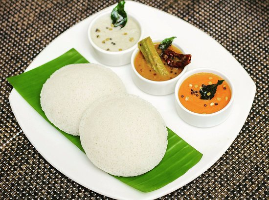
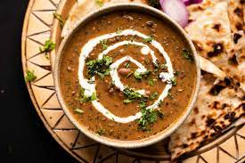
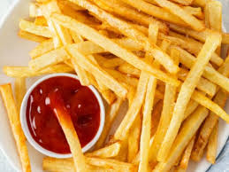
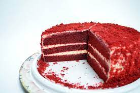

FIND TASTE THAT SUITS YOU
BREAKFAST

ALOO PARNATHA

UPMA

CHOLE BHATURE

RAVA UTTAPAM

MASALA DOSA

IDLI SAMBHAR

POHA

SAVORY FRENCH TOAST
LUNCH

PANEER LABABDAR
RAJMA

KADHI

MUSHROOM
DINNER

TOFU TIKKA MASALA

DAL MAKHANI

BHINDI
ALOO GOBHI
SNACKS

FRIES
MANCHURIAN

SPRING ROLL
PANEER TIKKA

BURGIR

SANDWICH

PIZZA

PASTA
SWEETS

GULAB JAMUN

RASGULLA
RASMALAI

BURFI
CAKES

CHEESE CAKE
TRISMASU

TRES LES CHES

RED VELVET